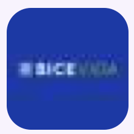
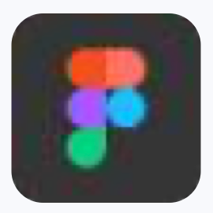
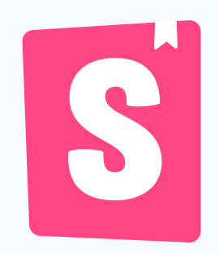
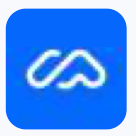

Perfil
AI Product Designer con más de 8 años diseñando productos digitales end-to-end para web y app en insurtech, fintech y salud. Uso IA en todo el proceso: implementé un chatbot con IA que resuelve el 90% de las conversaciones, creé usuarios sintéticos con IA para probar flujos antes de construirlos y prototipo con Claude y Cursor. Lidero desde el discovery hasta la implementación, con UX research, Design Systems y métricas de negocio y CX.
90%
de las conversaciones resueltas por el chatbot con IA
−20%
llamadas al call center gracias al chatbot
10
células de producto construyen sobre el Design System
−12%
abandono en el funnel de contratación CSI
Experiencia

Product Designer · BICE VIDA UX/UI Designer 2023 – 2026 · Product Designer 2026
Providencia, Santiago · Híbrido
- Chatbot con IA (Roma AI): lo diseñé e implementé dentro del flujo de contratación; mapeé con las ejecutivas del call center las preguntas y los flujos posibles. ~23.580 personas lo abrieron el primer mes, resuelve el 90% sin derivar, con −20% de llamadas y −66% de preguntas repetitivas.
- Usuarios sintéticos con IA: programé con Claude y Cursor un generador de usuarios según arquetipos de cada producto y rangos de edad; lo complemento con entrevistas moderadas.
- Lideré el primer Design System multimarca (BICE VIDA y Vida Security): tokens primitivos y semánticos, componentes en Figma y Storybook, gobernanza y componentes listos para IA (Figma MCP). Lo usan 10 células y el ~90% de lo que construyen se apoya en él.
- Rediseñé el funnel CSI con ~15 entrevistas, GA4, Pendo, Hotjar y usuarios sintéticos: de 10 a 8 pasos, −12% de abandono y +2% de contratación.
- Unifiqué dos seguros de viaje en una landing a partir de un benchmark: +16% de visitas y +2% de contratación. Design Sprint de la app Beliv.
UX/UI Designer · RedCapital
abr. 2022 – may. 2023 · Las Condes, Santiago
Diseño de interfaces para productos financieros (fintech).
UX/UI Designer · Grupo BIBA
nov. 2021 – abr. 2022 · Recoleta, Santiago
Investigación con usuarios y diseño de producto digital.
UX/UI Designer · Dartel
feb. 2021 – oct. 2021 · San Joaquín, Santiago
Diseño de interfaces para productos digitales.
CX Designer · Becton Dickinson
may. 2017 – feb. 2021 · Providencia, Santiago
Diseño visual y experiencia de cliente.
Habilidades
IA aplicada
Producto y UX
UI y sistemas
Herramientas

Figma
UI · prototipado

Storybook
Design System

Maze
Investigación
Jira
Gestión ágil
Claude · Cursor
Prototipos con IA
También: GA4PendoHotjarLyssnaConfluenceAirtable